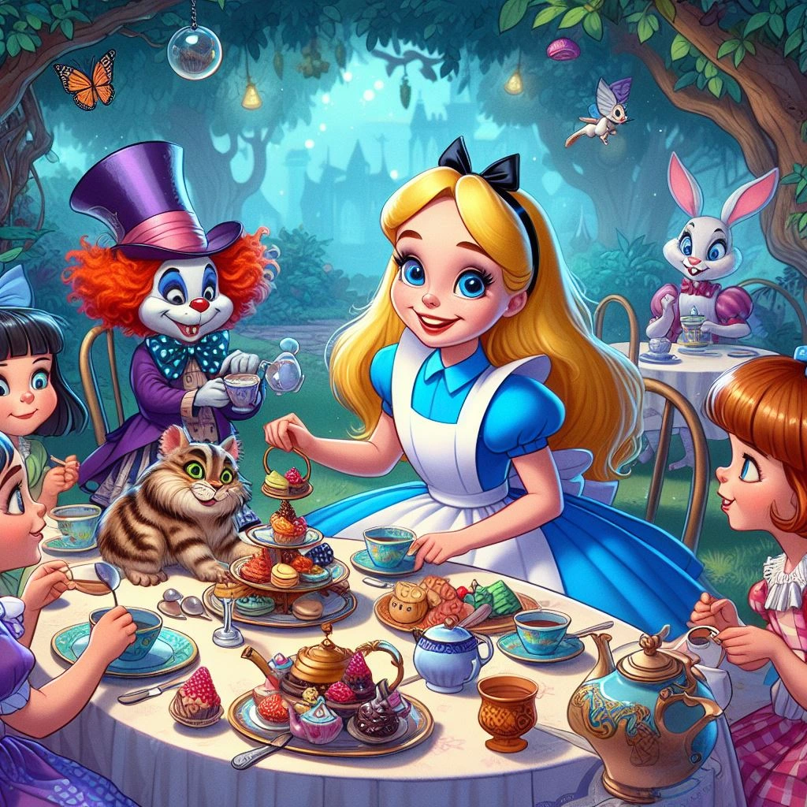

Wonderland Whimsy
A Guide to Hosting an Enchanting Alice in Wonderland Birthday Extravaganza!
January 18, 2024
Updated: February 13, 2024
Embark on a fantastical journey down the rabbit hole as we unravel the secrets to crafting a whimsical Alice in Wonderland-themed birthday party for your little ones! Join me for a tea party of tales, charming characters, and magical adventures that will transport every young guest to a wonderland of delight.
Down the Rabbit Hole: Transforming Your Realm into Wonderland
Wonderland Decor Wonderland:Adorn your party kingdom with vibrant colors, oversized flowers, and whimsical characters that echo the enchanting world of Wonderland.
Mad Hatter's Chair:
Craft a peculiar throne fit for the birthday VIP! An eccentric chair adorned with mismatched teacups, playing cards, and a whimsical hat will be the perfect seat for the day's honoree.

Curious Costumes: Embracing Wonderland Whimsy
Wonderland Attire:Encourage young guests to don their most whimsical costumes! From the Cheshire Cat's grin to the Queen of Hearts' crown, let their imagination run wild with Wonderland-inspired outfits.
Wonderland Characters' Visit:
Summon real-life Wonderland characters to join the celebrations! At Pixies Parties, our charming characters are ready to bring the magic and madness of Wonderland to life.
Tea Party Tidbits: Delightful Delicacies for Wonderland Tummies
Mad Hatter's Tea Menu:Craft a menu fit for the Mad Hatter's tea party! Mini sandwiches, whimsical cookies, and a fantastical cake will be the talk of the tea table.
Wonderland Buffet:
Create a buffet table adorned with teapots, top hats, and Wonderland trinkets! Colourful snacks, themed treats, and a variety of iced teas will satisfy even the most curious appetites.


Wonderland Whimsies: Activities and Games Fit for Little Dreamers
Queen's Croquet Challenge:Organize a lively game of croquet with a Wonderland twist! Let the young ones play the Queen's croquet challenge with inflatable flamingos and hedgehogs.
Hat Decorating:
Let creativity bloom with a hat-decorating activity! Young dreamers can design their own Wonderland-inspired hats to wear during the festivities.
Mad Hatter's Tea Party:
Host a Mad Hatter's tea party where young guests can enjoy tea party games like musical chairs with a whimsical twist! Set up a table with tea cups, saucers, and teapots, and play lively music as they move around the table.
Picture-Perfect Moments: Capturing the Whimsy of Wonderland
Wonderland Photo Corner:Create a picturesque photo area with oversized flowers, teacup props, and Wonderland backdrops! Let young guests capture their enchanting transformations amidst the whimsy.
Wonderland Keepsakes:
Bid adieu with whimsical favors! Playing cards, Wonderland-themed trinkets, or mini tea sets will be treasured reminders of the magical day.
The Grand Unveiling
As the Cheshire Cat grins and the Mad Hatter tips his hat, remember, it's not just a party—it's a whimsical wonderland of joy and imagination! With a sprinkle of magic and a dash of eccentricity, you'll create an unforgettable Alice in Wonderland-themed celebration that'll leave everyone grinning like the Cheshire Cat.So, curious hosts and lovers of whimsy, set the stage for a celebration as magical as Wonderland itself! For an extra touch of enchantment, Pixies Parties awaits to turn your Wonderland dreams into a reality.
Until our next fairytale adventure,
Pixies Parties